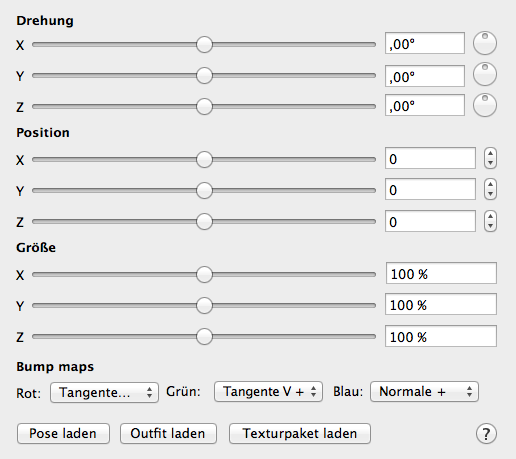

Um ein Modell zu platzieren, wählen sie im Menü unter “Ablage” den Punkt “Modell hinzufügen”. Alternativ können sie auf den “+”-Knopf im Dokumentenfenster klicken. Sie können dann das Modell auswählen, egal wo es auf der Festplatte liegt. Wählen sie die .mesh .oder .mesh.ascii-Datei.
Das neue Modell erscheint in der Standardpose im Ursprung des Koordinatensystems. Um es wegzubewegen, gibt es verschiedene Möglichkeiten:

Im Dokumentenfenster können sie das Modell bewegen, nach dem sie es in der Liste links ausgewählt haben. Sie können die Position direkt eingeben, oder über die Schieberegler modifizieren. Hier können sie das Modell auch drehen und vergrößern oder verkleinern.
Sie können das Modell in der Liste auch umbenennen.
Im Renderfenster können sie das Objekt mit der Maus oder den Pfeiltasten bewegen. Wählen sie das Modell dazu im Dokumentenfenster aus oder klicken sie auf das Modell, bis es im Dokumentenfenster ausgewählt ist. Dann können sie es bewegen:
| Eingabe | Bewegung |
|---|---|
| Pfeiltasten | Bewegt das Modell nach links, rechts, vorne oder hinten, relativ zur aktuellen Kameraposition. Bei gedrückter Umschalttaste bewegt sich das Modell schneller. |
| Pfeiltasten hoch und runter bei gedrückter Wahltaste | Bewegt das Modell hoch oder runter. Bei gedrückter Umschalttaste bewegt sich das Modell schneller. |
| Klicken und Ziehen bei gedrückter Wahltaste | Bewegt das Modell nach links, rechts, vorne oder hinten, relativ zur aktuellen Kameraposition. |